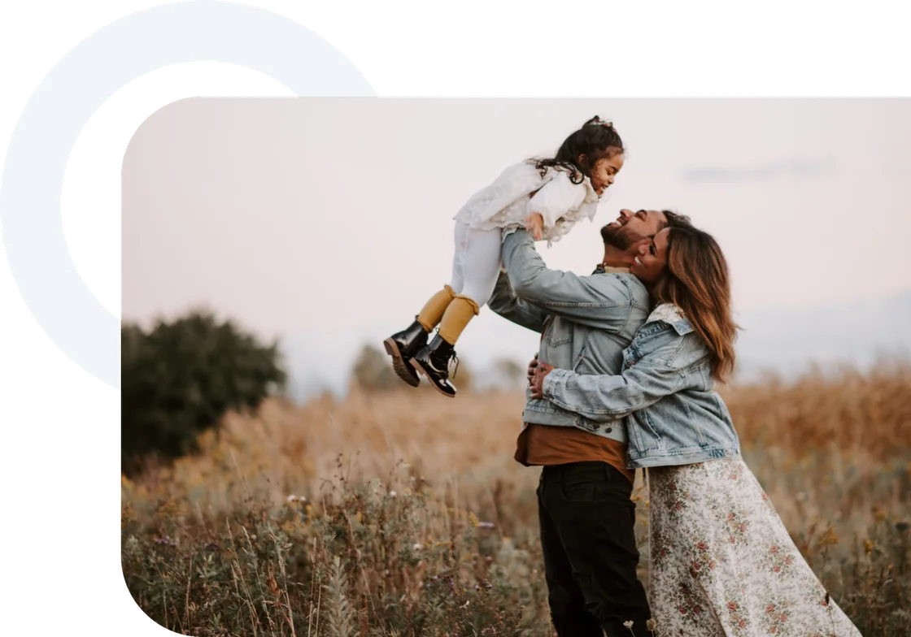

Your health
Major medical insurance
Helps you manage medical expenses from covered illnesses or accidents. Hospital networks and terms depend on the plan you choose.
Explore the guideYour health, your family and your plans deserve an informed choice. At GUTS, we help you understand your protection and savings options with clear, personal advice.
First we listen. Then we explore your options.

GUTS Seguros is an insurance advisory and brokerage business in Cancun. We guide individuals, families and businesses through life, major medical, education, savings and key person insurance options. Cover is provided by the insurer under the terms of each policy.
Choose a priority to explore a related option. Then we can discuss your needs.
Review hospitals, deductibles, coinsurance and coverage terms. Price alone does not tell the whole story.
Explore this optionGeneral guidance; this is not a quote or individual recommendation.
Explore five paths to protection. We help you understand what each one does and what to review before you choose.
Helps you manage medical expenses from covered illnesses or accidents. Hospital networks and terms depend on the plan you choose.
Explore the guideFinancial support for your beneficiaries in the event of a covered death. Your policy sets out the benefit amount, term and conditions.
Explore the guidePlan a savings goal for your children’s education. Explore contribution schedules, terms and the protection benefits of each option.
Explore the guideExplore options combining protection and savings for a long-term goal, based on your budget and the product’s terms.
Explore the guideAn option to help your business manage the financial impact of losing an essential person, subject to the coverage purchased.
Explore the guideBenefits, exclusions, costs and acceptance requirements vary by insurer and product. This is general information; review the proposal and policy wording.
| Option | Protection goal | What to review in the proposal |
|---|---|---|
| Major medical insurance | For you and your family | Review deductibles, coinsurance, hospitals and waiting periods. |
| Life insurance | For the people who depend on you | Review the benefit amount, beneficiaries, term and exclusions. |
| Education plans | For your children’s education | Review contributions, term, currency and withdrawal terms. |
| Savings insurance | For your long-term plans | Review costs, surrender values, terms and guaranteed benefits. |
| Key person insurance | For your business continuity | Review the insured person, covered risks and beneficiary. |
| Criterion | What to compare | A useful question to ask |
|---|---|---|
| Need | Whether both proposals address the same goal. | Which risk or goal does this option address? |
| Sustainable cost | Total cost, payment schedule and continuation terms. | What payment commitments would I have over the term? |
| Scope | Limits, exclusions, benefits and requirements. | Which situations are not covered? |
| Your contribution | Deductibles, coinsurance or other applicable amounts. | Which expenses might remain my responsibility? |
| Changes and exit | Terms for changes, cancellation or withdrawals. | What happens if my situation changes? |
| Documentation | Proposal, policy schedule and full wording. | Where is each benefit documented? |
Choosing insurance starts with understanding it. Our process puts your questions and priorities first.
We discuss what you want to protect and the budget you can set aside.
We explain benefits, costs and terms so you can compare options clearly.
We go through the insurer’s documentation and application requirements.
Policy issuance and the start of cover depend on acceptance and the policy terms.
A good decision goes beyond the premium. These concepts help you read a proposal and ask your adviser specific questions.
Visit CONDUSEFThe essentials of insurance in Cancun, explained simply. For advice about your situation, let’s talk.
Ask another questionGUTS Seguros provides advice and brokerage services for major medical, life, education, savings and key person insurance. The right option depends on your goals, budget and each product’s terms.
There is no single price. Premiums depend on factors such as age, the applicant’s profile, benefit limits, hospital network, deductible and coinsurance. Request a personalised proposal and review its terms before deciding.
The deductible is the amount your policy requires you to pay for a covered event. Coinsurance is your percentage share of covered expenses, usually after the deductible. How they apply, including limits and exceptions, depends on your policy.
Not necessarily. Policies can include waiting periods, exclusions and conditions relating to pre-existing medical conditions. Request the policy wording and confirmation of acceptance from the insurer before assuming a treatment is covered.
Life insurance focuses on financial support for beneficiaries after a covered death. Savings insurance can include an accumulation component for a goal. Some options combine both functions; review guaranteed benefits, costs and surrender values.
To start a conversation, share your name, contact details and the type of protection you are interested in. This site does not request medical records or payment details. The insurer may require additional information through its application channels.
Ask for your adviser’s name and licence number, then check their details in the public register of the Comisión Nacional de Seguros y Fianzas (CNSF). Authorisation and validity should be verified with that official source.
GUTS Seguros is at Av. Acanceh, Mz. 2, Lt. 3, Floor 3, Benito Juárez, postal code 77504, Cancun, Quintana Roo. Call +52 241 112 3580 or email contacto@guts.mx. Please confirm availability before visiting.
Tell us what you would like to protect. Call us, email us or prepare your enquiry below.
Please call to confirm availability before visiting.
We only need a few details to start the conversation.
This page does not submit or store your enquiry on a server. You send the message using your email app.
GUTS Seguros. Personal guidance for important decisions.